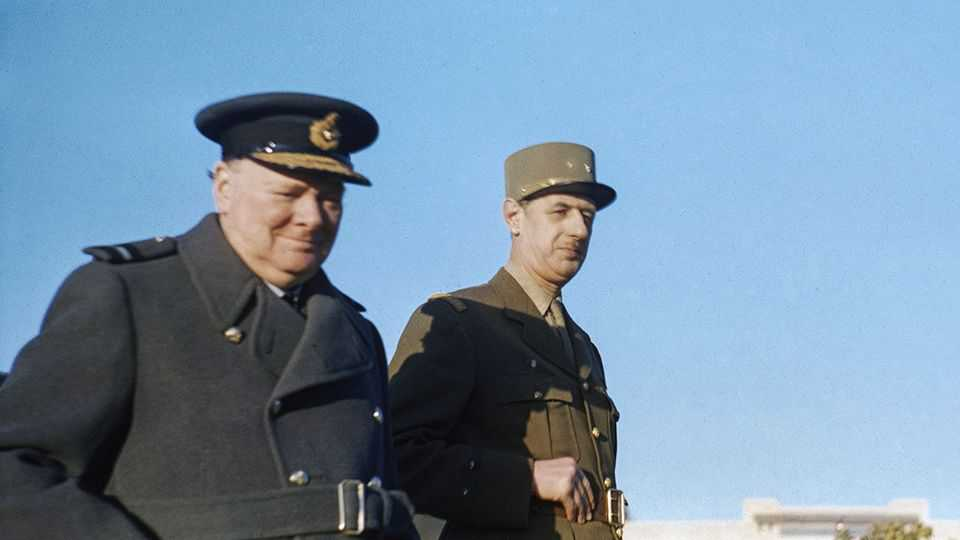

France is love-bombing Britain
And Britain seems keen to return the compliment, for a change

Sep 3rd 2026
There are few more disconcerting experiences for the British than being love-bombed by the French. Britain’s neighbours across the English Channel are usually regarded as pesky rivals, exasperating partners and irritatingly well-tailored to boot. Yet this week France went out of its way to charm Britain.
On September 2nd President Emmanuel Macron and King Charles met at a high-profile event at the British Museum to inaugurate the Bayeux tapestry exhibition, set to be this season’s London blockbuster. It is the first time the 11th-century work depicting the Norman conquest of England in 1066 has left France. The loan “took probably more years” to negotiate than Brexit, Mr Macron joked last year; he has made it a personal centrepiece of bilateral diplomacy. “When we come together around one table,” he said of Anglo-French ties after announcing the exhibition in 2025, “then everything is possible.”
Why is France being so nice to Britain? Historical rivals, the two countries have sparred in recent years: over Brexit, submarine sales, small boats and more. When asked whether Mr Macron was a friend or foe, Liz Truss, fleetingly Britain’s prime minister, once said, “The jury’s out.” Now Britain seems keen to return the compliment. Under Sir Keir Starmer, Mr Macron got a state visit, a banquet at Windsor Castle and a partner with whom to build a “coalition of the willing” for Ukraine. Mr Macron was due on September 3rd to be the first foreign leader to visit Andy Burnham, Sir Keir’s successor, in Downing Street. The pair were expected to discuss Ukraine, security and Britain’s ties to the EU.
One clue to the new entente may in fact lie not in the British Museum but in a superb new French two-part biopic of Charles de Gaulle, “La Bataille de Gaulle”. Directed by Antonin Baudry, an ex-diplomat, it is—unusually for a French production—based on a British biography, “A Certain Idea of France: The Life of Charles de Gaulle”. Written by Julian Jackson, a historian at Queen Mary University of London, the 928-pager is the product of years of painstaking archival research.

The big-screen diptych, starring Simon Abkarian in the title role and Sir Simon Russell Beale as a wonderfully crabby Winston Churchill, is naturellement a stirring tale of courage and moral clarity. This is the myth that to this day surrounds the résistant and founder of modern France. But, perhaps thanks to the foreign biographer’s eye, it is also an even-handed examination of both the visionary greatness and human fragility of le général.
Of particular interest for British viewers, the first part, “L’âge de fer”, dwells on De Gaulle’s years in exile in Hampstead, in north London, after the fall of France to Nazi Germany in 1940. It does not gloss over the high-minded general’s stormy relationship with Churchill. “Betting on De Gaulle seems something of a leap of faith, don’t you think?” Anthony Eden, the secretary of state for war, asks the prime minister. “This is not my first war,” Churchill retorts, adding clinically: “If he fails, we’ll get rid of him.” The general and the prime minister trade plenty of insults. But they also share moments of mutual understanding, admiration—and a flicker of affection.
London, after all, provided De Gaulle with refuge, offices (4 Carlton Gardens), a microphone (the BBC), backing (most of the time) and legitimacy (which the Americans resisted). The French have not forgotten. In 2020 Mr Macron awarded London, “totally exceptionally”, the Croix de la Légion d’honneur, France’s highest honour, as a mark of “eternal gratitude”. London, he said, was “the last bastion of hope when all seemed lost”.
What Mr Macron seems to be saying is that despite Brexit, despite Donald Trump, or perhaps because of both, France and Britain need to stick together now, as they did then. The De Gaulle biopic, which has drawn over 5m cinema-goers in France, not only evokes nostalgia for an age of unimaginable bravery. It also speaks to modern worries about national sovereignty, dependence and democratic values.
Stubbornly independent-minded, De Gaulle was infuriated by Roosevelt’s post-war plans for American military government of France, kept secret from him. The film includes the moment Churchill told the general gruffly that Britain would always choose America over Europe. Yet the doctrine of autonomy embodied by De Gaulle finds new resonance now that Mr Trump’s America is threatening to leave Europe to fend for itself. Despite the populist-right Reform UK party breathing down his neck, Mr Burnham has said that Britain needs to “be bolder” in getting closer to the EU. Mr Trump has already helped push Britain and France closer together. Last year the two countries reinforced co-operation over nuclear deterrence. The pair co-lead the “coalition of the willing”.
The film carries another message too: that the dark forces of nationalism can be beaten. The populist right is on the rise in both countries. Marine Le Pen is the current favourite to win next year’s French presidential election. On September 4th Jordan Bardella, her lieutenant, is due to be a guest of Nigel Farage, Reform’s leader, at the party’s conference in Birmingham. Mr Macron likes to urge the French not to cede to the “spirit of defeat”, a nod to a book about the fall of France in 1940 by Marc Bloch, a résistant gunned down by the Gestapo. The historical parallel may be imperfect. But this battle is yet another that Britain and France are in together. ■